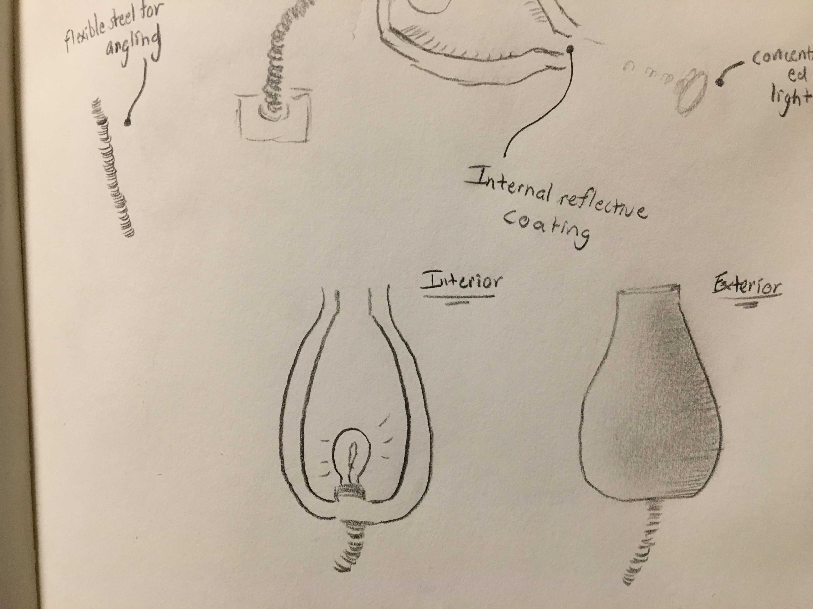
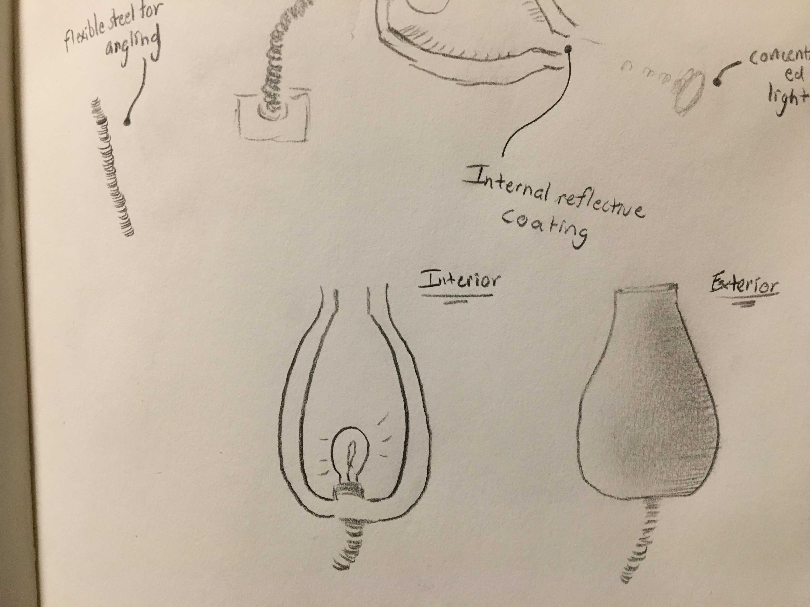

This week, I stepped back and reconsidered the designs from the previous week. I had not known that the concepts I was generating last week were supposed to be in consideration for the final project, and, when analyzing the concepts with this new goal in mind, they soured. Either they did not seem interesting enough, or they simply didn't seem doable (over the course of this particular semester). So, I went back to the drawing board. My first google search was 'problems of light'. This led to a page that documented the most common lighting problems. I considered each of these problems in turn.
Initially, when investigating glare and 'insufficient light', I considered a pair of glasses that do the opposite of conventional sunglasses -- they make the outside seem less gloomy to the wearer. Some research revealed that yellow-tinted glasses produce this effect automatically. The problem, though, is that I wouln't be doing anything new if I made some yellow-tinted glasses. I considered trying to augment the incoming light with different lens sizes, but a quick investigation revealed that this would not be possible (using larger lenses to capture more light would deliver more light to the iris, not the pupil, and so the user would not perceive any increase in brightness).
Next, I investigated 'poorly distributed light'. Unfortunately, the solutions seemed to be outside of the scope of this project, again. Solutions include: coating walls in reflective materials, positioning lights more effectively (duh), cleaning dirty surfaces so as to better reflect light, etc. I doubt that I could present an optimal light positioning as a final project...
Having made no progess considering these generic problems, I looked to lighting problems that I'd experienced in my own capacity. I decided on two: reading lights and interior car lights. Reading lights leak too much, so, if you happen to be trying to sleep next to someone who is reading, it's likely that you'll have a very tough time falling asleep. Interior lights in cars distract the drivers. The interior light reflects on the inside of the windshield at night, distracting the driver from the road, and potentially serving as a hazard. As a driver myself, I never let my passengers switch on the interior lights while I'm driving. I picked one of the two ideas arbitrarily (I may be compelled to swap in the future): the reading light.
 

There are two key ideas built into this reading light: The first, is that the structure ought to focus the light onto one distinct point, minimizing light leakage. The second is that the light needs to be the correct colour (not white) so as to minimize melatonin suppression before bed. The rest of the decisions were primarily aesthetic. Earlier sketches are not shown.
The initial sketch structure in Fusion 360.
Next, the body was built with a rotation.
Then it was rendered to check the shape.
The flexible neck was added to the 3D model.
It was rendered in glass in order for the interior detailing to be visible.
For this week's third medium, I decided to investigate how effective my design would be at minimizing light leakage. In order to do this, it was not necessary to create the full piece (the aesthetic details are unlikely to affect the efficacy), but it was important to see how different funnels captured and controlled the light.
The first construction, made out of brown paper, revealed that the thin material would not sufficiently contain the light. It leaked significantly. The light that exited the end of the funnel was also diminished, due to the leakage.
I corrected the leakage by constructing the same shape out of wood (even though the funnel has a different size, the exit point for the light is the same). This construction did not leak light at all, though the eventual light beam was still diminished. I'd posit that this is due to the wood absorbing the light. The next step will be to coat the interior of a funnel with a reflective material, to prevent the light from being absorbed.